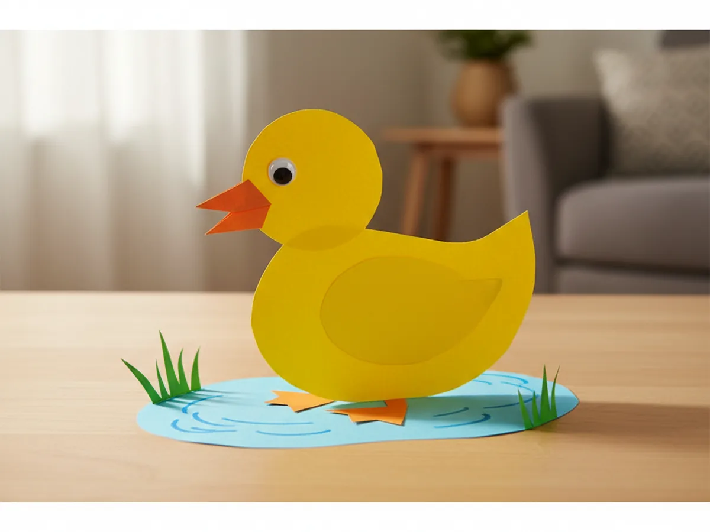
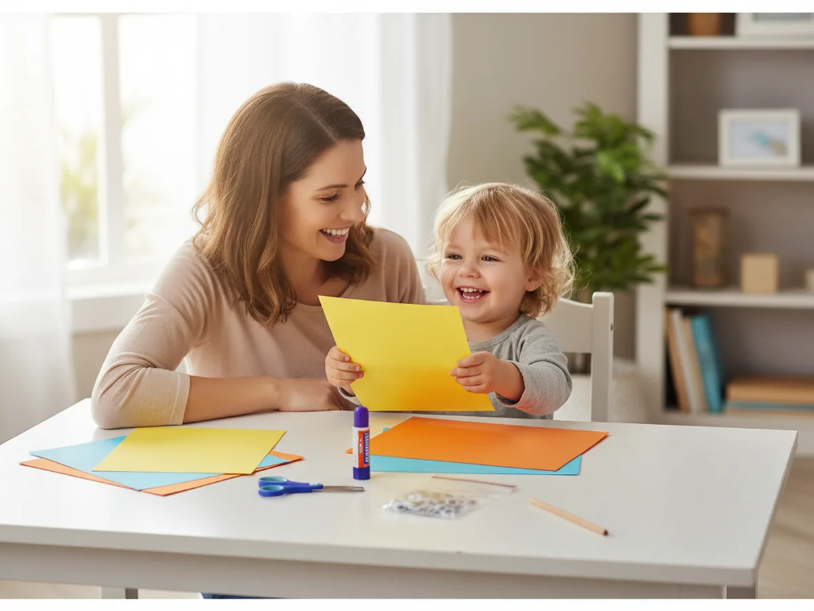
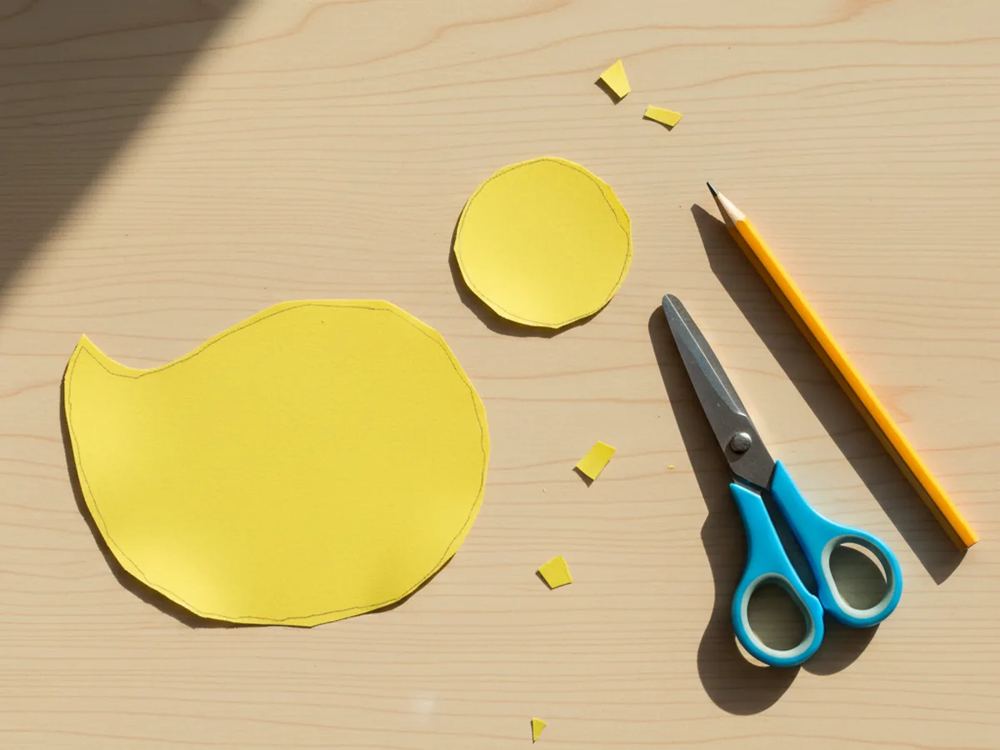
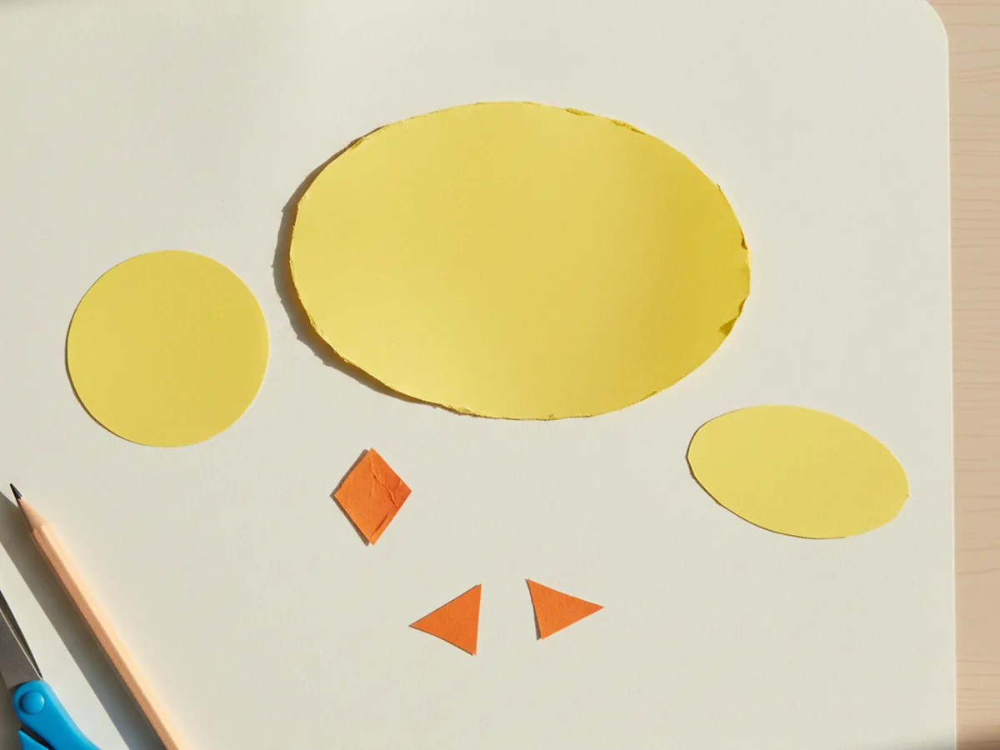
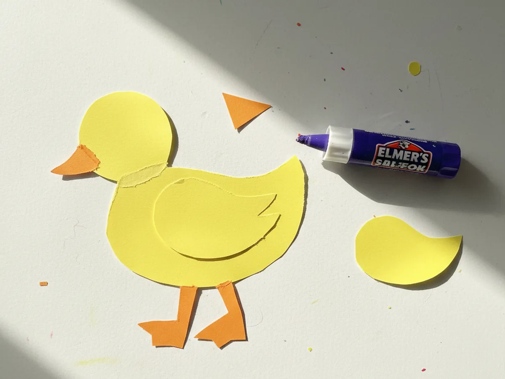
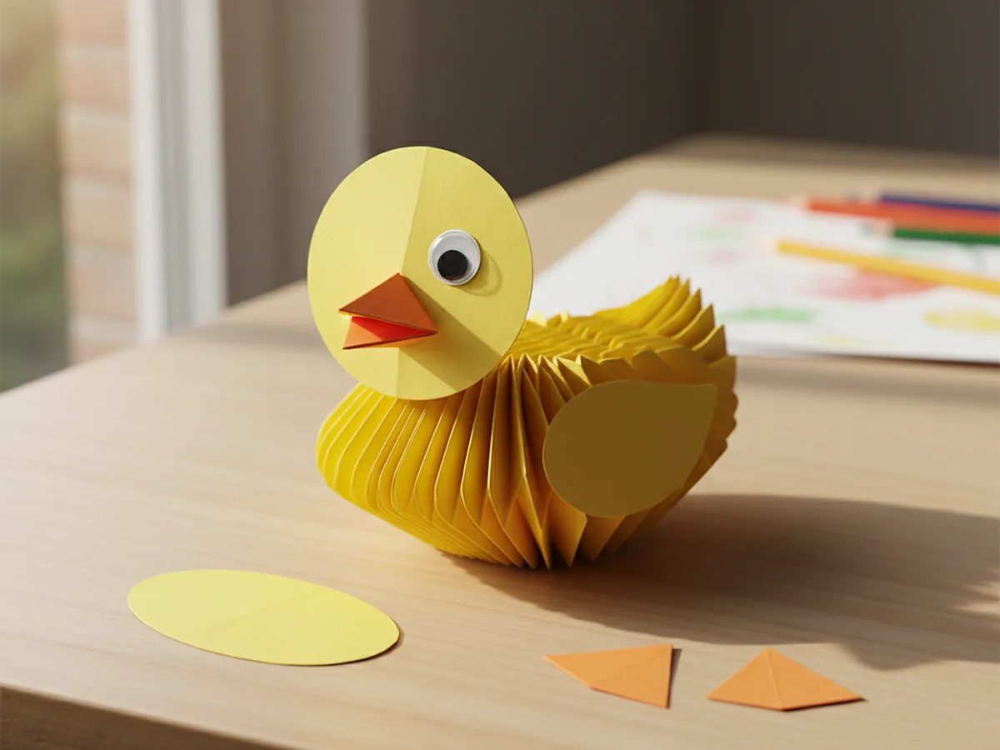
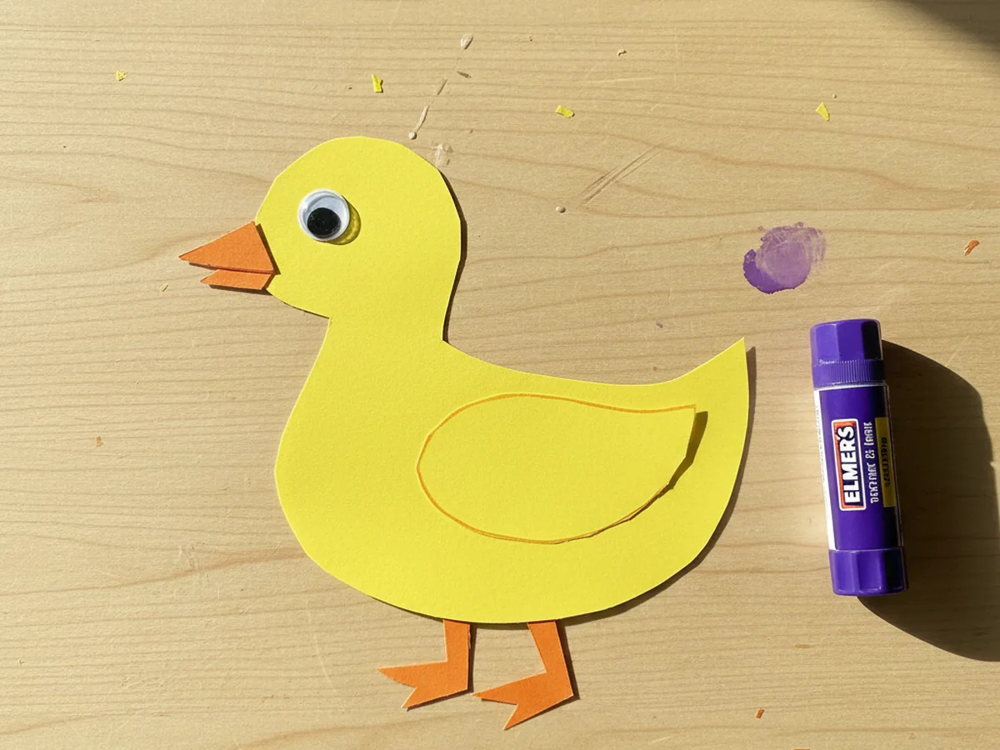
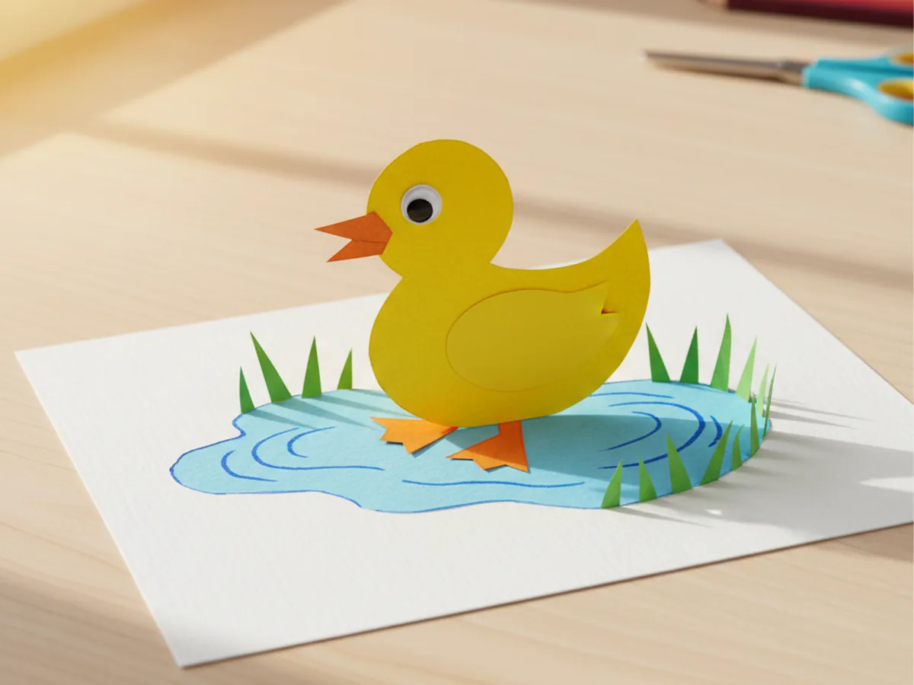

There is just something so cheerful about a little yellow duck waddling across the kitchen table. This duck paper craft is one of those gentle no-fuss projects that feels almost too easy: a few snipped shapes, a dab of glue, and suddenly your child has made the cutest tiny pond friend. It comes together in about twenty-five minutes, which is perfect for a slow afternoon, a rainy day, or that little gap between snack and dinner. 🦆
The best part is that this easy duck paper craft is genuinely beginner-friendly. The shapes are forgiving, the cuts are simple, and even a wonky beak makes the duck look more charming, not less. If your little one is just learning to handle scissors, this is the kind of low-stress craft you can both relax into.
Why Kids Love This Craft
Children adore this duck paper craft because the duck takes shape so quickly. Within minutes of cutting the first oval, they can see the body of their little duck appearing right under their fingers. That fast visible progress is huge for young kids who can lose interest in projects that drag on too long.
This paper duck craft is also wonderful for fine motor practice. Cutting the rounded body shape teaches your child to turn the paper while snipping, which is a real scissor skill. Pinching the small beak fold and pressing tiny feet into place builds the same finger strength they need for buttons, pencils, and zippers later. Even a three year old can do most of this simple paper duck craft with a bit of friendly help from mom.
Best of all, there is the storytelling moment when the duck is finished. Suddenly your child is splashing the paper duck through the paper pond, naming it, and giving it a personality. That sweet bit of pretend play is exactly what makes this cute duck craft feel like more than just a quick activity. 💛

What You'll Need
Here is everything you need for this duck paper craft. I always set the supplies out on the table first so my little one can sit down and dive straight in.
- Crayola Construction Paper (240 sheets, 12 colors), the perfect set for yellow duck shapes, an orange beak and feet, and a blue paper pond.
- Elmer's Disappearing Purple Glue Sticks (30 pack), washable and easy for tiny fingers to twist up and apply.
- Fiskars 5 inch Blunt Tip Kids Scissors, the right safe size for cutting the gentle curves of this craft.
- Googly Wiggle Eyes Self Adhesive (500 pcs assorted), the easiest way to give your duck a sweet expressive eye in seconds.
- Crayola Broad Line Markers (10 classic colors), for adding a simple drawn eye if you skip googly eyes, plus tiny details.
- A pencil for sketching shape outlines and a flat surface or piece of cardstock to display the finished duck.
Step-by-Step Instructions
This duck paper craft walks through six gentle steps that flow naturally from cutting to gluing to scene-building. Take your time and let your child do as much as they can comfortably handle.
Step 1: Cut the Body and Head Shapes
Start by lightly sketching a large oval on yellow construction paper for the duck's body, about the size of your child's open hand. Then sketch a smaller circle on another part of the same yellow sheet for the head, roughly the size of a clementine. Cut both shapes out using kid scissors. The lines do not need to be perfect, soft and rounded works beautifully.

Step 2: Cut the Beak, Wing, and Feet
From an orange sheet of construction paper, cut a small diamond shape about the size of a quarter for the beak, plus two little orange triangles for the feet. Then go back to the yellow paper and cut a smaller oval for the wing, roughly half the size of the body. Lay all the pieces out next to the body and head so your little one can see the duck slowly coming together.

Step 3: Glue the Head onto the Body
Pick up the large yellow oval and place it on the table the long way, like a smooth rolling hill. Add a generous swipe of glue stick to the back of the small round head, then press it onto the upper left side of the body, letting it slightly overlap the body curve. That little overlap is what makes the duck look like one connected creature instead of two floating shapes.

Step 4: Add the Beak and Eye
Fold the small orange diamond gently in half so it forms a triangle with a little crease in the middle, just like a real bird beak. Glue the folded edge onto the front of the head so the beak points outward. Then peel a googly eye and stick it just above the beak. If you do not have googly eyes, draw a simple round eye with a black marker. Suddenly the duck has a face, and that is always the moment kids gasp a little.

Step 5: Add the Wing and Feet
Take the smaller yellow oval and glue it onto the middle of the body as the wing, slightly tilted so it looks like the duck is gently flapping. Then flip the body for a moment, glue the two orange triangles along the bottom edge, and let just the points peek out so the feet look like they are sticking out from under the duck. Press everything firmly so nothing slides while the glue sets.

Step 6: Make a Pond and Mount the Duck
From a sheet of blue construction paper, cut a long wavy strip for the pond, about as wide as the duck and a little longer. Glue it onto a piece of white cardstock or another sheet of paper as the background. Then glue the finished duck right on top of the pond so it looks like it is happily floating. Snip a few thin green strips for grass or reeds along the edge, draw a couple of tiny water ripples around the duck with a marker, and your duck paper craft is complete. ✨

Variations to Try
Mama Duck and Ducklings: Make one large duck following the steps above, then make two or three tiny ducklings using the same shapes scaled way down. Line them up behind mama duck on the pond for a sweet family scene that feels especially lovely for Mother's Day.
Rubber Ducky Bath Time: Skip the pond background and instead glue your duck onto the front of a folded blue paper card shaped like a bathtub, with little white paper bubbles floating around it. This makes a very cute homemade card to send to a new baby or a duck-loving cousin.
Tissue Paper Texture Duck: Instead of plain yellow paper, let your child glue torn pieces of yellow tissue paper onto a paper plate or cardstock body shape for a soft fluffy texture. It turns the same craft into a sensory-friendly activity that toddlers especially love.
Final Thoughts
This duck paper craft is one of those simple little projects that asks for almost nothing in supplies and gives back the biggest happy smile from your child. The cutting, gluing, and scene-building all unfold at a calm pace, which makes it a wonderful weekend morning activity, a quiet rainy-day project, or a sweet way to celebrate spring together. Whatever you do with the finished duck, your child will remember the moment you made it side by side.
If your little one finishes their first paper duck, save this article on Pinterest so other craft-loving mamas can find it easily. Happy crafting! 🌼
More Crafts You'll Love
If your child loved this duck paper craft, they will adore these other sweet animal projects too: